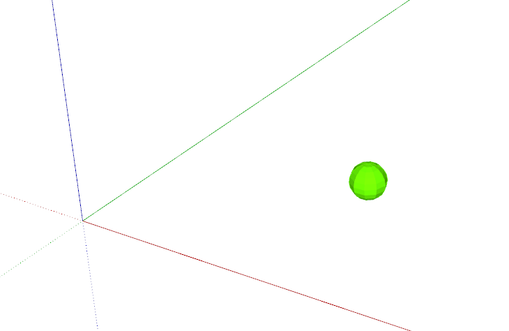
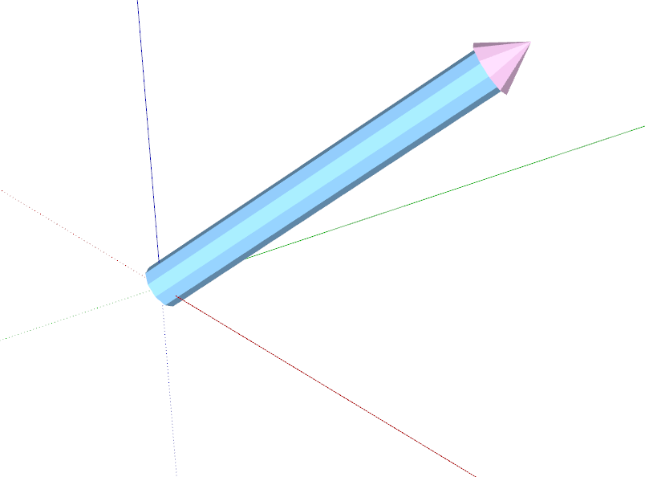

第一章 课程信息
本课件链接: https://elonzyy.github.io/course-skp19
Github链接: https://github.com/elonzyy/course-skp19
环境配置
下载并安装 SketchUp
下载链接: https://www.sketchup.com/zh-CN/download/all
2017 Make 是免费版，但不可用于商业通途。
2017-2019 都适用于本课程。
选择并安装一款代码编辑器
- Visual Studio Code
- Atom
- Sublime
- VIM 讲师用的编辑器
关于Ruby解释器
本课程只会用到SketchUp自带的Ruby解释器。并不需要额外下载并安装Ruby。
如果同学有兴趣在非SketchUp的环境下运行ruby文件可以安装独立的Ruby解释器。
下载链接: https://www.ruby-lang.org/en/downloads
也可以使用RVM安装Ruby解释器，链接： https://rvm.io
参考文档
Ruby文档： https://ruby-doc.org
SketchUp Ruby API文档：http://ruby.sketchup.com
第二章 Ruby基础
第三章 几何
工具箱
代码链接：op_course_helpers/visualization/pt_and_vec.rb
可视化 Geom::Point3d
CourseHelpers.visualize_pt(Geom::Point3d.new([1.m, 1.m, 0]))
可视化 Geom::Vector3d
CourseHelpers.visualize_vec(Geom::Vector3d.new([1.m, 1.m, 1.m]))
长度 Length
API文档: http://ruby.sketchup.com/Length.html
从数值类型创建长度
100.to_l
100.mm
从字符串类型创建长度
'100mm'.to_l
Sketchup.parse_length('100mm')
SketchUp 单位
- mm
- cm
- m
- km
- inch (")
- feet (')
- yard
- mile
长度单位换算
- 数值类型默认单位：inch
100.mm.to_inch
API
| 关键字 | 描述 | 文档链接 |
|---|---|---|
| Length | 长度类型 | doc |
| to_l | 转换至长度 | doc |
| parse_length | 将字符串转换至长度 | doc |
| mm | 从数值创建单位为mm的长度 | doc |
| cm | 从数值创建单位为cm的长度 | doc |
| m | 从数值创建单位为m的长度 | doc |
| km | 从数值创建单位为km的长度 | doc |
| inch | 从数值创建单位为inch的长度 | doc |
| feet | 从数值创建单位为feet的长度 | doc |
| yard | 从数值创建单位为yard的长度 | doc |
| mile | 从数值创建单位为mile的长度 | doc |
| to_mm | 将长度转换为数值，数值意义所隐含的单位为mm | doc |
| to_cm | 将长度转换为数值，数值意义所隐含的单位为cm | doc |
| to_m | 将长度转换为数值，数值意义所隐含的单位为m | doc |
| to_km | 将长度转换为数值，数值意义所隐含的单位为km | doc |
| to_inch | 将长度转换为数值，数值意义所隐含的单位为inch | doc |
| to_feet | 将长度转换为数值，数值意义所隐含的单位为feet | doc |
| to_yard | 将长度转换为数值，数值意义所隐含的单位为yard | doc |
| to_mile | 将长度转换为数值，数值意义所隐含的单位为mile | doc |